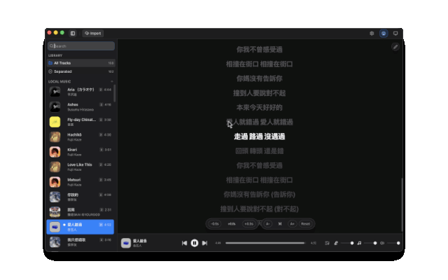

Use the files you already own.
Open MP3, FLAC, WAV, OGG, or AAC songs from your own library.
Free desktop karaoke
OpenKara removes vocals, shows lyrics or CD+G graphics in time with the music, and keeps the whole workflow on your computer.
macOS, Windows, and Linux
The app
Sidebar for your library, central player with lyrics, mixer for stems. Every control is where you expect it.
Overview
Open MP3, FLAC, WAV, OGG, or AAC songs from your own library.
If a track already has a same-name .cdg file, OpenKara
renders it during fullscreen playback.
Your music stays local while OpenKara prepares the karaoke track.
Keep songs, processed tracks, and metadata in one folder you can move between machines.
What it does
The interface keeps the main job simple: pick a song, let OpenKara prepare it, and start singing.
Vocal removal
Start with a vocal-free track, or use separate instrument controls when a song needs more adjustment.
Lyrics
OpenKara looks for timed lyrics automatically and can also use
lyrics already saved with your files, or render a matching
.cdg sidecar when one is available.
Resume later
Longer jobs pick up where they left off, so you do not need to start from the beginning again.
Same library
Keep your karaoke library in one folder and move it between computers without rebuilding it from scratch.
Getting started
Drag a file in or use the import button. OpenKara handles the rest — extracting metadata, separating stems, and fetching lyrics in the background.

Install
Most people only need the download. Build from source only if you want to contribute or inspect the code.
Recommended
Or install with Homebrew on macOS:
brew install thedavidweng/tap/openkaraIf macOS blocks the app on first launch:
xattr -rd com.apple.quarantine /Applications/OpenKara.appOn first launch, OpenKara helps you create a karaoke library and starts downloading the default audio model in the background.
See downloadsFor contributors
git clone https://github.com/thedavidweng/OpenKara.git
cd OpenKara
pnpm install
./scripts/setup.sh
pnpm tauri dev